My research broadly addresses how land use change impact zoonotic disease sharing patterns between wildlife, domestic animals and people. One aspect of this research delves into how well a landscape of risk (Weinstein, Buck, and Young 2018) can be predicted across space and time (Albery et al. 2022), and if people that spend more time in areas of high pathogen prevalence on the landscape are more likely to be infected with that parasite. The landscape of risk is the variation in pathogen density or pressure across the landscape, and the underlying environmental characteristics that permit pathogen persistence and onward transmission to susceptible individuals visiting that area (e.g., (Titcomb et al. 2021)).
Prior to doing this with actual data I want to set up a simulation so I can figure out some of the methods using a simplified scenario. In particular I am interested in comparing how noise in the dataset due to the variability in individuals home range sizes and susceptibility to infection affect my ability to associate cumulative exposure risk to infection probability. For my purposes here susceptibility encompasses variability in behavior of individuals that influence pathogen exposure, immunological function, genetics, etc (Sweeny and Albery 2022).
Risk Map
I am using the elevation raster of Zion National Park included in the spDataLarge package as the landscape risk map. The thought behind using this and not simply a simulated raster is to have highly variable patterns and spatial autocorrelation. However to use this, I need the values to fall between 0 and 1. This is what the original maps looks like with the scaled values.
Code
## load the data from the spDataLarge packageriskmap <-rast(system.file("raster/srtm.tif", package ="spDataLarge"))## project in utm so easier units for making the simulated tracksriskmap <-project(riskmap, "EPSG:26912")## make values [0,1]riskmap <- riskmap/max(values(riskmap), na.rm=T)## most places should be pretty low## look at the 'original values'ggplot() + stars::geom_stars(data = stars::st_as_stars(riskmap)) +scale_fill_viridis_c() +coord_fixed() +labs(x=NULL, y=NULL, fill ="elevation scaled [0,1]", title ="Origional Elevation Map") +theme(axis.text =element_blank()) # since don't care about location
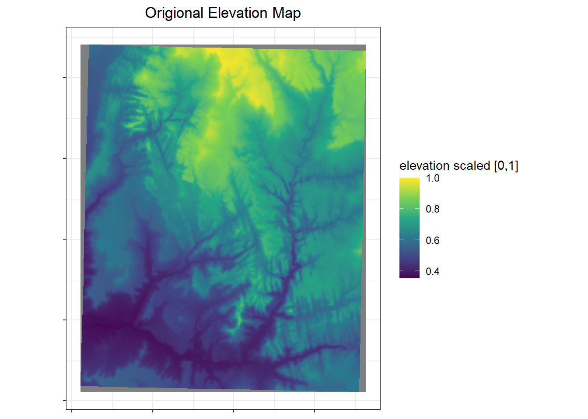
I want the values to be right skewed so that most places are low risk. So I transformed the values to values3 in my scaled raster to get the desired distribution of risk (pathogen density) in my risk map.
Code
## histogram of value distributionp1 <-values(riskmap) %>%as.data.frame() %>%filter(is.finite(srtm)) %>%ggplot() +geom_histogram(aes(x=srtm)) +labs(x ="cell values", y ="frequency", title ="Origional risk map values [0,1]")## add right skew to values so most are lowriskmap <- riskmap^3## plots to commpare old and new value distributionsp2 <-values(riskmap) %>%as.data.frame() %>%ggplot() +geom_histogram(aes(x=srtm)) +labs(x ="cell values", y ="frequency", title ="Skewed risk map values [0,1]")## plot old and new next to each otherp1+p2
To make things run quickly, I aggregated the risk map so the resolution is lower. Then cropped the map to a squarer area so individuals don’t fall outside of the area with values (the grey parts of the map above).
Code
## make resolution lower so things run quicklyriskmap <-aggregate(riskmap, fact=5, fun="mean")## make squaretmp <-vect(ext(riskmap)-1500, crs=crs(riskmap))riskmap <-crop(riskmap, tmp)## plot the new lower resolution mapggplot() + stars::geom_stars(data = stars::st_as_stars(riskmap)) +scale_fill_viridis_c(option ="H") +coord_fixed() +labs(x=NULL, y=NULL, fill ="risk level", title ="Risk Map") +theme(axis.text =element_blank()) # since don't care about location
Code
## check the data structure# riskmap
Single simulation
I am using a single simulation to figure out how to set up the simulation and to outline the process involved in the simulation. Once that is ironed out, I’ll put everything into a single function so I can repeat the simulation many times and get confidence intervals for my estimated effects.
Simulate movement
To simulate movement of individuals I followed the SiMRiv vignette. I wanted to have two types of movement to use in my simulation. I am calling these:
Simple random walk - Single-state uncorrelated movement in an homogeneous landscape using Brownian motion (Turchin 1998) to make individuals ‘vibrate’ in place. Movement of only this type is the ‘null’ state because an individual essentially staying in one place will have an exposure risk equal to their singular location. This state will be used to demonstrate that an individual’s probability of infection is proportional to their exposures.
Complex correlated walk - Multistate correlated movement in a heterogeneous landscape using Levy walk-like movement with two-state movements composed of small random walks and bursts of longer correlated random walks (Reynolds 2010). A heterogeneous landscape is used to makes some areas high resistance, thus the population’s movements will look more similar, since most movement will follow low resistance ‘paths’ (roads), but individuals will still randomly branch off into higher resistance areas.
An important part of simulating movement is the step length, which need to be relevant to the animal and the resolution of the raster. To limit movement in the simple random walk, make step sizes 1/20th of the resolution of the risk map. Find the resolution of the risk map. The resolution show help with choosing a step length that is relative to the pixel sizes so that individuals can move, but not too much within a given step. Steps of ~1/10 a pixel seem reasonable.
Code
## save cell sizecell_size =res(riskmap)[1]## number of stepsnsteps =1000## random walk with step lengths relative to rast resolutionrand.walk <-state(concentration =0, #turning angle concentration; 0=randompwind =perceptualRange("gaussian", # centered on indiv's position cell_size/5), ## radius of perceptual range 1/4 of steplengthsteplen = cell_size/20, #maximum step lengthname ="tight_random") #name of the state## correlated walk with step lengths relative to rast resolutionscorr.walk <-state(concentration =0.9, #turning angle concentration; 1=straight linepwind =perceptualRange("circular", # gives equal weight to all pixels centered on current position cell_size*2), ## radius of perceptual range 1/4 of steplengthsteplen = cell_size/5, #maximum step lengthname ="correlated") #name of the state## using those states make walkersrand.walker <-species(states = rand.walk)## set up levy walker walklevy.walker <-species(states =c(rand.walk, corr.walk),trans =transitionMatrix(0.05, 0.01)) #probabilities of changing state 1 -> 2 and 2 -> 1
Simple random walk
I simulated the simple random walks for 100 individuals all starting at randomly selected areas with in an area of interest (aoi). Because individuals can run off the edge of the raster, the starting locations should not be near the edge. The area of interest is the white rectangle, with each point representing an individual’s starting location.
Code
## generate random starting points ### avoid edges by defining area of interest more inside the risk map### find bounding box of risk mapaoi <-st_bbox(riskmap)### make insto sfc (spatial) objectaoi <-st_as_sfc(aoi)### buffer to be 5 cells from edge of riskmapaoi <-st_buffer(aoi, -cell_size*5)# aoi <- crop(riskmap, aoi)# ggplot() +# stars::geom_stars(data = stars::st_as_stars(riskmap)) +# scale_fill_viridis_c(option = "H") +# coord_fixed() +# labs(x=NULL, y=NULL, fill = "risk level", title = "Area of interest for starting locations on Risk Map") +# theme(axis.text = element_blank()) +# since don't care about location# geom_sf(data = aoi, fill = "white", alpha = 0.3, color = "white", lwd = 1)start_coord <-st_sample(aoi, 100, type ="random")## plot itggplot() + stars::geom_stars(data = stars::st_as_stars(riskmap)) +scale_fill_viridis_c(option ="H") +coord_fixed() +labs(x=NULL, y=NULL, fill ="risk level", title ="Random walk starting locations") +theme(axis.text =element_blank()) +# since don't care about locationgeom_sf(data = aoi, fill ="white", alpha =0.3, color ="white", lwd =1) +geom_sf(data = start_coord)
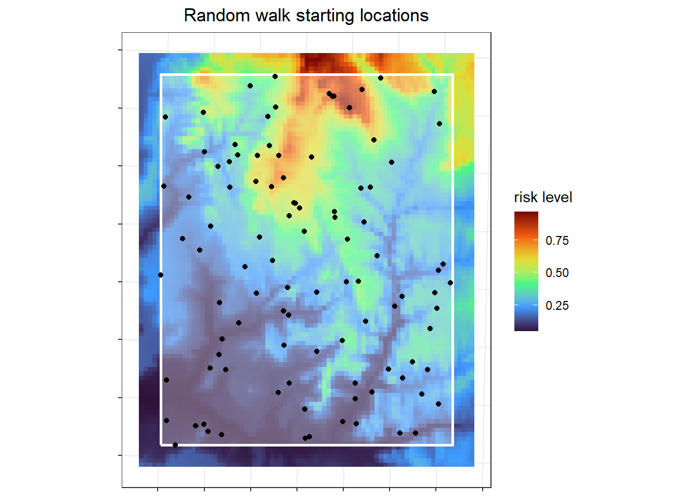
The random walks for all the individuals look like my intended “vibrating in place” outcome, such that individuals will spend all their time in just a few pixels, so theoretically their exposure risk is less variable.
Code
## need the locations as a nx2 matrix# start_coord_mat <- as.matrix(as.data.frame(start_coord, geom="xy"))start_coord_mat <-st_coordinates(start_coord)## simulate single state walks of 1000 stepssim.rw <-list()for (i in1:100) {## simulate from location i tmp <-simulate(rand.walker, nsteps,coords = start_coord_mat[i,])## save results to a list sim.rw[[i]] <-cbind(tmp[,1], tmp[,2])}## make in to sfc linessim.rw.sfc <-lapply(sim.rw, st_linestring)sim.rw.sfc <-st_sf(id =1:100, geometry = sim.rw.sfc) %>%st_set_crs(st_crs(riskmap))## plot itggplot() + stars::geom_stars(data = stars::st_as_stars(riskmap)) +scale_fill_viridis_c(option ="H") +coord_fixed() +labs(x=NULL, y=NULL, fill ="risk level", title ="Random walks") +theme(axis.text =element_blank()) +# since don't care about locationgeom_sf(data = sim.rw.sfc)
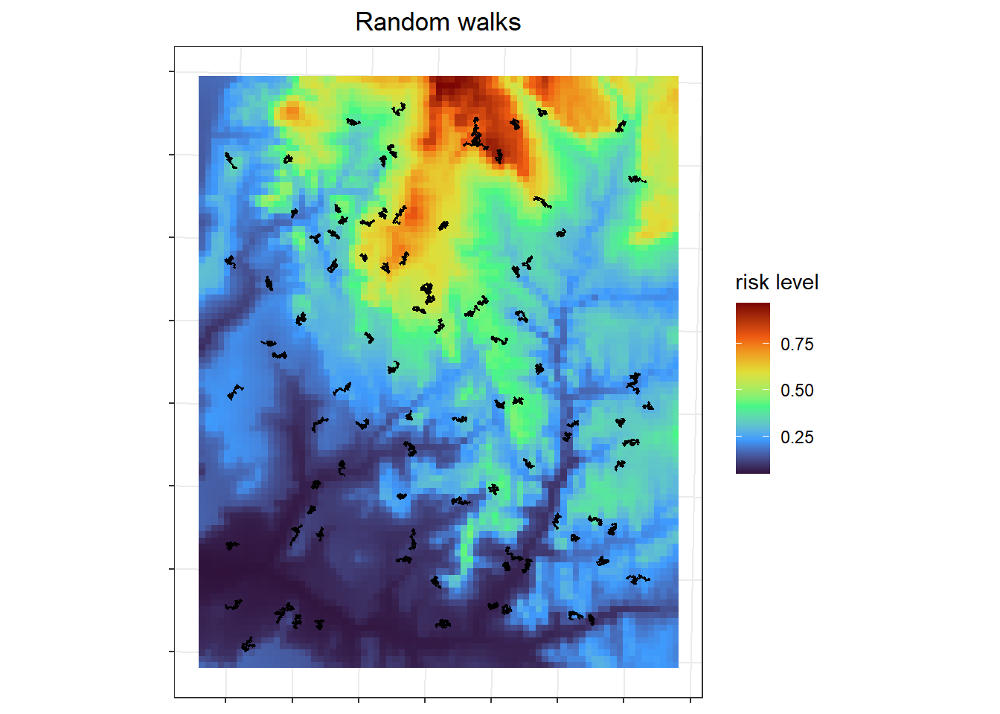
Correlated walks
A resistance raster is needed to get correlated (levy walker) walks that are similar between individuals.
Code
## basemaps for resistance --NOT using because individual end up in a hairball# landcover <- resistanceFromShape(# system.file("doc/landcover.shp", package="SiMRiv")# , res = 50, field = "coverclass", mapvalues = c(# "forest" = 0.5, "urban" = 1, "dam" = 0# , "shrubland" = 0.75), background = 0.95)# ## river shape is the main resistance, because walks will follow pathsriver.shape <- sf::st_read(system.file("doc/river-sample.shp", package="SiMRiv"), quiet = T)## resistence surfaceresistance <-resistanceFromShape(river.shape, #system.file("doc/river-sample.shp", package="SiMRiv"),# baseRaster = landcover, ## not usingres =50, #provide when don't provide basemapbuffer =300, field =0.01,background =0.75, margin =3000)## add central area with low resistence so individuals start in roughly the same placeriver.cent <-st_buffer(st_centroid(st_union(river.shape)), 200)resistance <-resistanceFromShape(river.cent, baseRaster = resistance, buffer =1000, field =0, background =1, margin =3000)# buffer here is just some magical function to convert river# order into a meaningful value in the [0, 1] range!# plot(resistance, axes = F, main="resistence raster")# resistance
Then the resistance raster should be down sampled and moved to the same location as the risk map.
Code
## move the resistence 'rivers' to the same location as the risk mapresistance <-rast(nrows =dim(resistance)[1],ncols =dim(resistance)[2],nlyrs =1, names ="resistance", extent =st_bbox(aoi),vals =values(resistance),crs =crs(riskmap))## resample to resolution matches riskmapresistance <-resample(resistance, riskmap, method ="rms")## make NAs to 1resistance[is.na(resistance)] =1## plot itggplot() + stars::geom_stars(data = stars::st_as_stars(resistance)) +scale_fill_steps(breaks =c(0, 0.001, 0.4, 0.6, 0.75, 1),low="white", high ="black") +# scale_fill_viridis_c(option = "H") +coord_fixed() +labs(x=NULL, y=NULL, fill ="resistance", title ="Resistance layer") +theme(axis.text =element_blank()) # since don't care about location
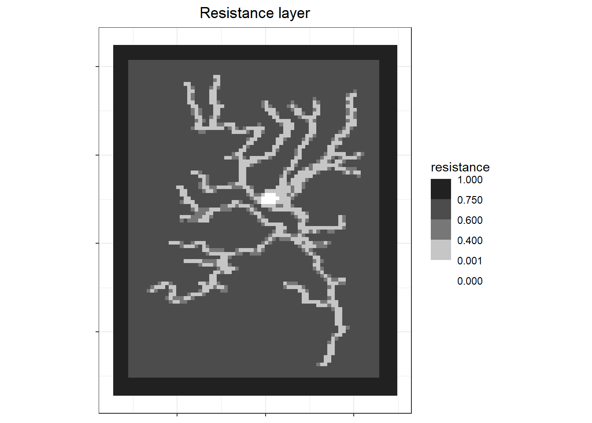
At first I tried using the same random starting locations as above to generate my correlated walks for each individual.
Code
## simulate single state walks of 1000 stepssim.rw <-list()for (i in1:100) {## simulate from location i tmp <-simulate(levy.walker, nsteps,resist =raster(resistance),coords = start_coord_mat[i,])## save results to a list sim.rw[[i]] <-cbind(tmp[,1], tmp[,2])}## make in to sfc linessim.rw.bad <-lapply(sim.rw, st_linestring)sim.rw.bad <-st_sf(id =1:100, geometry = sim.rw.bad) %>%st_set_crs(st_crs(riskmap))## plot itggplot() + stars::geom_stars(data = stars::st_as_stars(resistance)) +scale_fill_steps(breaks =c(0, 0.001, 0.4, 0.6, 0.75, 1),low="white", high ="black") +# scale_fill_viridis_c(option = "H") +coord_fixed() +labs(x=NULL, y=NULL, fill ="resistance", title ="Levy-walker walks - random start locations") +theme(axis.text =element_blank()) +# since don't care about locationgeom_sf(data = sim.rw.bad, col="red", alpha=0.5)
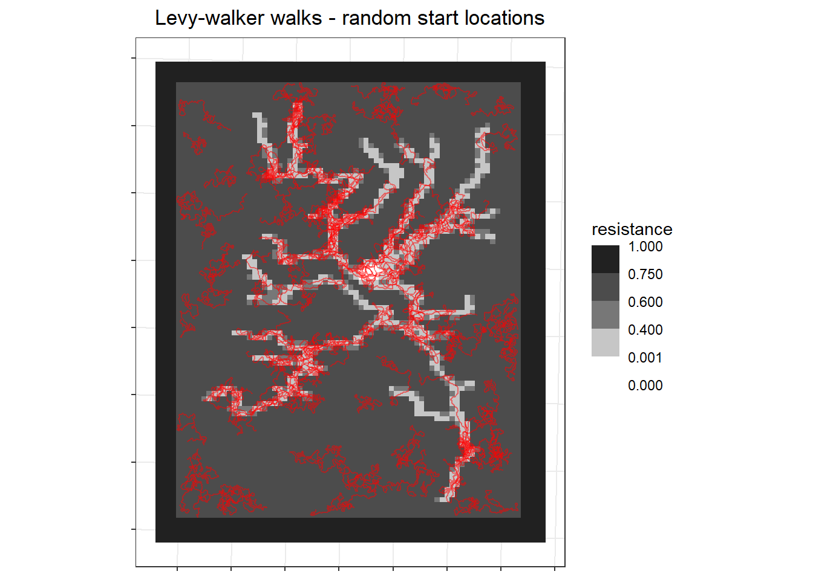
However, to make this more realistic, my correlated walks should also act like individuals following paths then delving off into different areas such as people accessing their crop fields. So instead of using random starting locations, I made the starting locations only be in low resistance areas.
Code
## new starting coords in areas of low resistance so don't get stuckinit =xyFromCell(resistance, sample(which(values(resistance) ==0), 100, replace=T))## simulatesim.rw <-list()for (i in1:100) {## simulate from location i tmp <-simulate(levy.walker, nsteps,resist =raster(resistance),coords = init[i,])## save results to a list sim.rw[[i]] <-cbind(tmp[,1], tmp[,2])}## make in to sfc linessim.rw.levy <-lapply(sim.rw, st_linestring)sim.rw.levy <-st_sf(id =1:100, geometry = sim.rw.levy) %>%st_set_crs(st_crs(riskmap))## plot itggplot() + stars::geom_stars(data = stars::st_as_stars(resistance)) +scale_fill_steps(breaks =c(0, 0.001, 0.4, 0.6, 0.75, 1),low="white", high ="black") +# scale_fill_viridis_c(option = "H") +coord_fixed() +labs(x=NULL, y=NULL, fill ="resistance", title ="Levy-walker walks") +theme(axis.text =element_blank()) +# since don't care about locationgeom_sf(data = sim.rw.levy, col="red", alpha=0.25)
Exposure risk
For each individual I calculate their utilization distribution based purely on the proportion of points in each cell (density). For real movement data using more accurate estimates of utilization distributions such as kernel density, Brownian bridge movement models, etc. However, those methods are slow.
To figure out how to do this, I first tried it out with just one individual.
Code
## which individual (1-100)who =1## kernel density estimatekde.trial <- terra::rasterize(st_cast(sim.rw.levy[who,], "MULTIPOINT"), riskmap, fun ="length", background =0)/nstepsif(sum(values(kde.trial), na.rm=T) !=1){stop("the sum of the density should be equal to 1")}
To see what that looks like, for the single individual I cropped to just the immediate area that individual used the plot their density estimate.
Code
## crop to area where the individual was so not tinykde.sm <- terra::crop(kde.trial, st_buffer(sim.rw.levy[who,], 2000))## similarly crop riskmap to same arearisk.sm <-crop(riskmap, st_buffer(sim.rw.levy[who,], 2000))## plot traj and kdeggplot()+ stars::geom_stars(data = stars::st_as_stars(kde.sm)) +scale_fill_viridis_c(option="A", direction =-1) +coord_fixed() +labs(x=NULL, y=NULL, fill ="kde", title ="Density raster of one individual") +theme(axis.text =element_blank()) +# since don't care about locationgeom_sf(data = sim.rw.levy[who,])
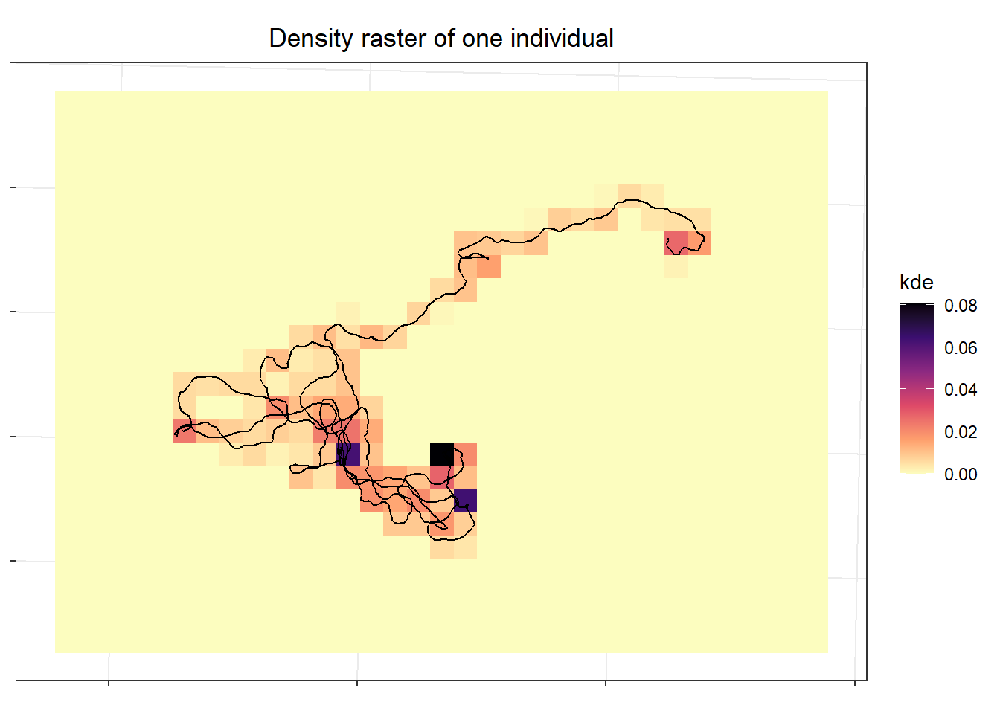
Now I want to calculate the exposure risk for each individual \(k\) in each pixel (\(i\)) as a function of the time they spend in that pixel and the risk of exposure in that pixel.
\[
Exposure_{ki} = kde_i*risk_i
\]
Code
## calculate risk kde.risk <- kde.sm*risk.sm## plots to demop1 <-ggplot()+ tidyterra::geom_spatraster(data=risk.sm) +scale_fill_viridis_c(option="A", direction =-1) +labs(title ="Landscape risk", fill ="risk") +theme(legend.position ="bottom", axis.text =element_blank(),legend.direction ="horizontal")p2 <-ggplot()+ tidyterra::geom_spatraster(data=kde.sm) +scale_fill_viridis_c(option="A", direction =-1) +labs(title ="KDE of Individual use", fill ="use") +theme(legend.position ="bottom", axis.text =element_blank(),legend.direction ="horizontal")p3 <-ggplot()+ tidyterra::geom_spatraster(data=kde.risk) +scale_fill_viridis_c(option="A", direction =-1) +labs(title ="Infection probability", fill ="probability") +theme(legend.position ="bottom", axis.text =element_blank(),legend.direction ="horizontal")p1 + p2 + p3
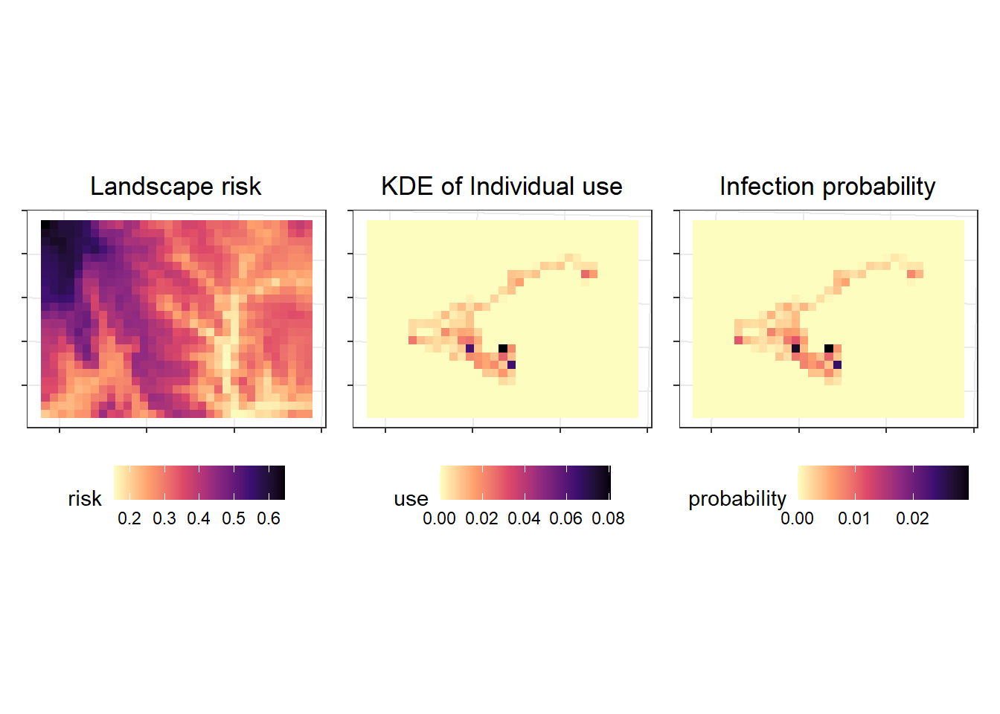
Therefore for each individual \(k\) their cumulative ‘exposure risk’ the sum of all their exposures in pixels, where \(i\) is \(1:n_{pixels}\): \[
Exposure_k = \sum{kde_i*risk_i}
\]
To calculate the cummulative exposure risk for all individuals, I used a function.
Code
## make a functionmeasure_risk <-function(walker, riskmap, nsteps){## convert from lines to points pts <-st_cast(walker, "MULTIPOINT")## dataframe with any attributes (just IDs) df <- pts %>%st_drop_geometry() %>%as.data.frame() pts <-vect(pts)## for each individual rasterize their points so have sum of points in each pixel## this is not working using the stars::st_rasterize, or the terra::rasterize -- both return one object of all individuals, not an obj per indiv## also tried using apply, lapp, and app with those terra::rasterize kde <-c()for(i in1:nrow(pts)){ kde[[i]] <- terra::rasterize(pts[i,], riskmap, fun ="length", background =0)/nsteps }## multiply time in cell (kde) * cell's risk kde.risk <-lapply(kde, function(i) i*riskmap)## sum of values in each layer are individual's risk indiv.risk <-lapply(kde.risk, function(i) sum(values(i), na.rm=T)) df$exp_risk <-unlist(indiv.risk)return(df)}
I found the cummulative expsoure risk for each individual using the function.
The distribution of values in the random walkers is the range of the map, which is expected.
Code
## look at some of the values# indiv.risk.rw %>% head() %>% knitr::kable(title = "Cummulative exposure risk (`exp_risk`) by individual (`id`)")indiv.risk.rw %>%ggplot()+geom_histogram(aes(x = exp_risk)) +labs(x ="risk", title ="Distribution of individual's cumulative exposure risk - Random walks")
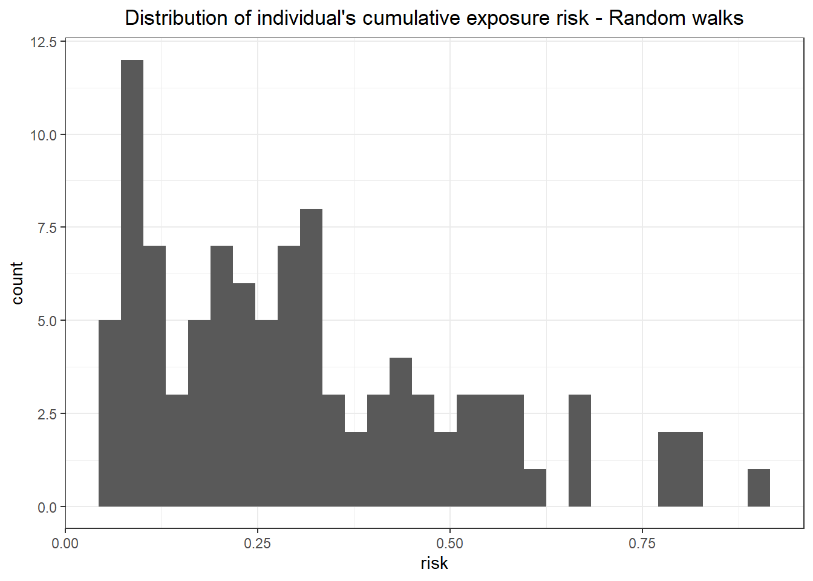
The distribution of values in the correlated walkers is less then the range of the map, which is also expected.
Code
# indiv.risk.levy %>% head()indiv.risk.levy %>%ggplot()+geom_histogram(aes(x = exp_risk)) +labs(x ="risk", title ="Distribution of individual's cumulative exposure risk - Levy-walker walks")
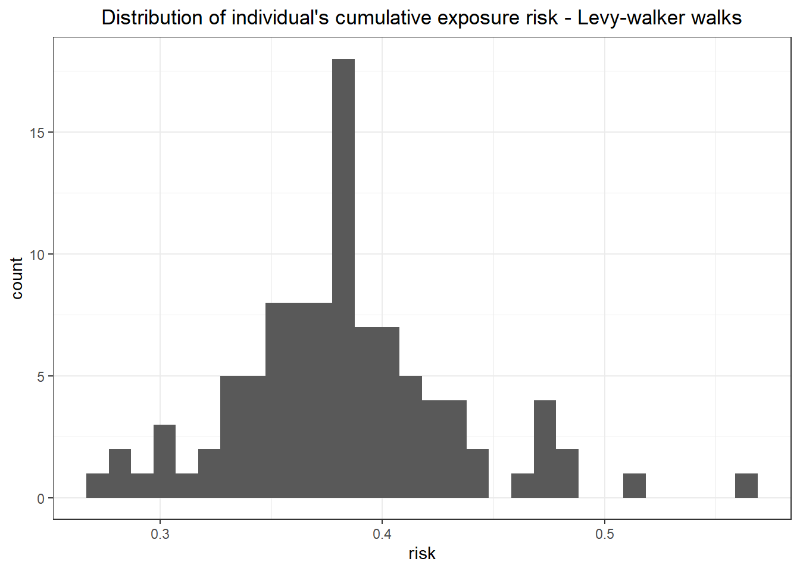
Assisgn susceptibility
Individuals should have variable susceptibility so that not everyone’s probability of infection equals their risk sum. This is adding noise to the data. I want to compare the randomly assign susceptibility to a fixed susceptibility for each simulation. The fixed susceptibility is just the average susceptibility of all individuals in that round of the simulation. For this simulation I am assigning susceptibility randomly using a uniform distribution between 0.7 and 0.9. and the fixed susceptibility with the average of the random susceptibility values.
Code
## susceptibility is variable between individualssusceptibility =runif(100, 0.7, 0.9)mean_suscept =mean(susceptibility)
The probability of infection is a product of the individuals exposure risk and susceptibility.
Code
## make a dataframe for the outcomes --- random walkersrw_risk <-cbind(indiv.risk.rw,data.frame( susceptibility = susceptibility)) %>%rowwise() %>%## predict infections based on exposure riskmutate(infected_es =rbinom(1, 1, exp_risk * susceptibility ), # sum(exp_risk * susceptibility)infected_e =rbinom(1, 1, exp_risk * mean_suscept)) # sum(exposure risk) alone## see how many people infected = 1rw_risk %>%count(infected_es) %>% knitr::kable()rw_risk %>%count(infected_e) %>% knitr::kable()
Infections in Random Walkers
exposure*susceptibility
infected_es
n
0
73
1
27
exposure*avg susceptbility
infected_e
n
0
74
1
26
Code
## make a dataframe for the outcomes --- levy walkerslevy_risk <-cbind(indiv.risk.levy,data.frame( susceptibility = susceptibility)) %>%rowwise() %>%## predict infections based on exposure riskmutate(infected_es =rbinom(1, 1, exp_risk * susceptibility ), # sum(exp_risk * susceptibility)infected_e =rbinom(1, 1, exp_risk * mean_suscept)) # sum(exposure risk) alone## see how many people infected = 1levy_risk %>%count(infected_es) %>% knitr::kable()levy_risk %>%count(infected_e) %>% knitr::kable()
Infections in Correlated Walkers
exposure*susceptibility
infected_es
n
0
65
1
35
exposure*avg susceptbility
infected_e
n
0
65
1
35
Results
If the map worked, then exposure risk should predict infection in the random walkers.
Code
p1 <-ggplot(rw_risk, aes(x=exp_risk, y = infected_es))+geom_point(aes(col=factor(infected_es))) +geom_smooth(method="lm") +scale_y_continuous(breaks =c(0, 1)) +labs(x ="exposure risk", y ="infected", col ="infected", subtitle ="exposure * susceptbility")p2 <-ggplot(rw_risk, aes(x=exp_risk, y = infected_e))+geom_point(aes(col=factor(infected_e))) +geom_smooth(method="lm") +scale_y_continuous(breaks =c(0, 1)) +labs(x ="exposure risk", y ="infected", col ="infected", subtitle ="exposure * avg susceptbility")p1 + p2 +plot_layout(guides ="collect") +plot_annotation(title ="Random walker infections")
Not great, but the infected individuals do have higher exposure risks. Let’s see how it worked for the Levy-walker correlated walkers that covered much more ground.
Code
p1 <-ggplot(levy_risk, aes(x=exp_risk, y = infected_es))+geom_point(aes(col=factor(infected_es))) +geom_smooth(method="lm") +scale_y_continuous(breaks =c(0, 1)) +labs(x ="exposure risk", y ="infected", col ="infected", subtitle ="exposure * susceptbility")p2 <-ggplot(levy_risk, aes(x=exp_risk, y = infected_e))+geom_point(aes(col=factor(infected_e))) +geom_smooth(method="lm") +scale_y_continuous(breaks =c(0, 1)) +labs(x ="exposure risk", y ="infected", col ="infected", subtitle ="exposure * avg susceptbility")p1 + p2 +plot_layout(guides ="collect") +plot_annotation(title ="Correlated walker infections")
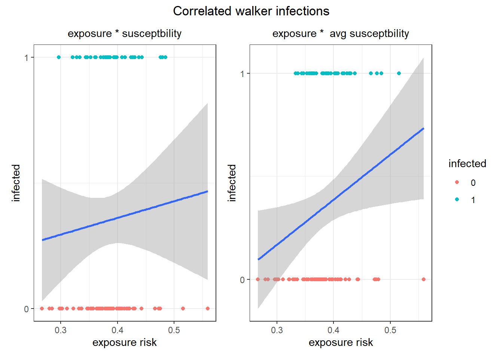
Compare predictive accuracy between the models
Code
pred_acc_fun <-function(x, infected_type){ x$infected <- x %>% dplyr::select(any_of(infected_type)) %>%pull()## binomial model mod <-glm(infected ~ exp_risk, data = x, family ="binomial")## predicted prob of infection x$pred_prob <-predict(mod, x, type ="response")## if predicted prob >50 say infected x$pred <-1*(x$pred_prob > .5) x$accurate <-1*x$infected == x$predsum(x$accurate) /nrow(x)}
The accuracy of the infection predictions should be highest in the random walk individuals with fixed susceptibility (exp_risk * avg susceptibility), followed by those with random susceptibility, then correlated walkers with fixed, then random susceptibility.
Ultimately to see how cumulative exposure risk predicts infection in people, the simulation needs to be run many times. To do that everything from the single simulation needs to be in a single function.
Code
simulation_fun <-function(n_steps =1000, n_individuals =100, susceptibility_range =c(0.7, 0.9),risk_landscape = riskmap, study_area = aoi, landscape_resistance = resistance, random_walker = rand.walker, correlated_walker = levy.walker){## simulate movement### Random (brownian) walks## random starting coordinates start_coord <-st_sample(study_area, 100, type ="random") start_coord <-st_coordinates(start_coord)## simulate single state walks of 1000 steps sim.rw <-list()for (i in1:n_individuals) {## simulate from location i tmp <-simulate(random_walker, n_steps,coords = start_coord[i,])## save results to a list sim.rw[[i]] <-cbind(tmp[,1], tmp[,2]) }## make in to sfc lines walks.random <-lapply(sim.rw, st_linestring) walks.random <-st_sf(id =1:n_individuals, geometry = walks.random) %>%st_set_crs(st_crs(risk_landscape))### Levy-walker (correlated random)## new starting coords in areas of low resistance so don't get stuck init =xyFromCell(resistance, sample(which(values(resistance) ==0), 100, replace=T))## simulate sim.rw <-list()for (i in1:n_individuals) {## simulate from location i tmp <-simulate(correlated_walker, n_steps,resist =raster(resistance),coords = init[i,])## save results to a list sim.rw[[i]] <-cbind(tmp[,1], tmp[,2]) }## make in to sfc lines walks.corr <-lapply(sim.rw, st_linestring) walks.corr <-st_sf(id =1:100, geometry = walks.corr) %>%st_set_crs(st_crs(risk_landscape))## Calculate cumulative exposure risk/individual### random walkers indiv.risk.random <-measure_risk(walker = walks.random, riskmap = risk_landscape, nsteps = n_steps)### correlated random walkers indiv.risk.corr <-measure_risk(walker = walks.corr, riskmap = risk_landscape, nsteps = n_steps)## assign susceptibility susceptibility =runif(100, susceptibility_range[1], susceptibility_range[2]) mean_suscept =mean(susceptibility)## determine infections## make a dataframe for the outcomes --- random walkers indiv.risk.random <-cbind(indiv.risk.random,data.frame( susceptibility = susceptibility)) %>%rowwise() %>%## predict infections based on exposure riskmutate(infected_es =rbinom(1, 1, exp_risk * susceptibility ), # sum(exp_risk * susceptibility)infected_e =rbinom(1, 1, exp_risk * mean_suscept)) # sum(exposure risk) alone## make a dataframe for the outcomes --- levy walkers indiv.risk.corr <-cbind(indiv.risk.corr,data.frame( susceptibility = susceptibility)) %>%rowwise() %>%## predict infections based on exposure riskmutate(infected_es =rbinom(1, 1, exp_risk * susceptibility ), # sum(exp_risk * susceptibility)infected_e =rbinom(1, 1, exp_risk * mean_suscept)) # sum(exposure risk) alone## output predictive accuracydata.frame(walker =c("Random", "Random", "Correlated", "Correlated"),susceptibility =c("Fixed", "Random", "Fixed", "Random"),accuracy =c(pred_acc_fun(indiv.risk.random, "infected_e"),pred_acc_fun(indiv.risk.random, "infected_es"),pred_acc_fun(indiv.risk.corr, "infected_e"),pred_acc_fun(indiv.risk.corr, "infected_es") ))}
Check that the function works when run one time. By default the simulation uses the riskmap, aoi, resistance raster, and random and levy walker walks set up previously. The default number of steps in each walk is 1000, for 100 individuals, with susceptibility [0.7, 0.9] as used previously.
Code
## check it works running one timesimulation_fun() %>% knitr::kable(title ="Results of one simulation using the function")
walker
susceptibility
accuracy
Random
Fixed
0.79
Random
Random
0.78
Correlated
Fixed
0.68
Correlated
Random
0.71
Then run the function 100 times.
Code
## fun the function many timeslg_sim <-replicate(100, simulation_fun(), simplify = F)## make the output into one large dataframelg_sim <-bind_rows(lg_sim)
The distributions of the accuracy of models that use cumulative exposure to predict infection show that as expected random walkers infections are predicted with higher accuracy, and that the effect of variable susceptibility to infection in each individual lower the accuracy of correlated walks more than random walks.
Code
## plot the distribution of predictive values between the fix susceptibility random and correlated walkslg_sim %>%ggplot(aes(x=accuracy, fill=walker)) +geom_density(adjust =1.5, alpha =0.7) +scale_fill_brewer(palette ="Pastel1")+facet_wrap(~susceptibility, ncol=1)+labs(title ="Accuracy of Infection Estimates",subtitle ="Fixed vs random susceptibility",fill ="Walk type")
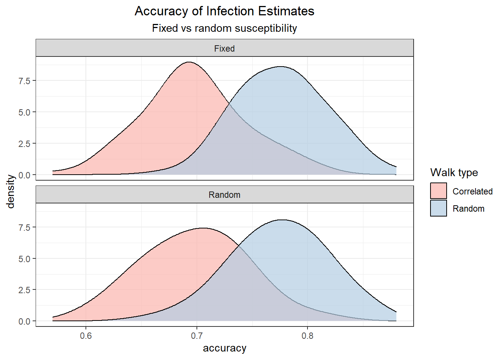
The predictive accuracy of the simulations that used the fixed susceptibility values for all individuals (infection is only related to cumulative exposure risk) is significantly higher in random walkers then correlated walkers.
Code
## plot the distribution of predictive values between the fix susceptibility random and correlated walkslg_sim %>%filter(susceptibility =="Fixed") %>%ggplot(aes(x=accuracy, fill=walker)) +geom_density(adjust =1.5, alpha =0.7) +scale_fill_brewer(palette ="Pastel1")+labs(title ="Accuracy of Infection ~ Cummulative Exposure")
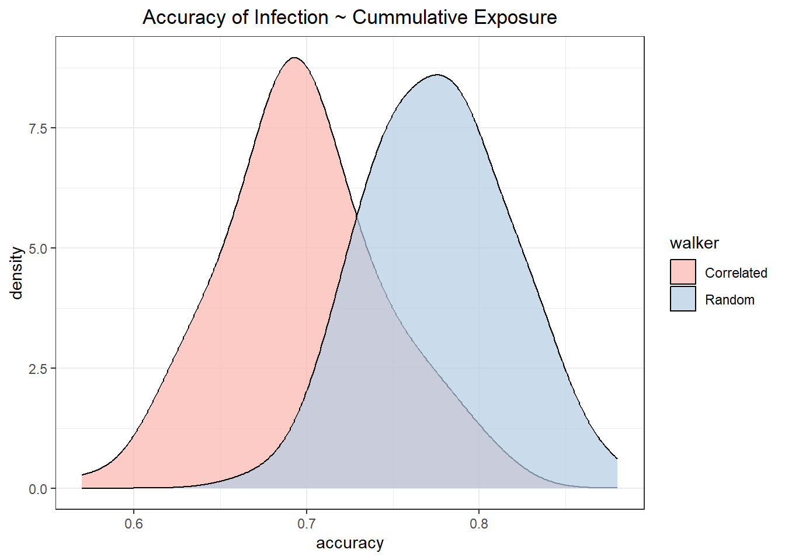
Code
## test if significantly differentlg_sim %>%filter(susceptibility =="Fixed") %>%t.test(accuracy ~ walker, data = ., var.equal =TRUE)
Two Sample t-test
data: accuracy by walker
t = -12.912, df = 198, p-value < 2.2e-16
alternative hypothesis: true difference in means between group Correlated and group Random is not equal to 0
95 percent confidence interval:
-0.09083536 -0.06676464
sample estimates:
mean in group Correlated mean in group Random
0.6973 0.7761
The same effect is seen in the randomly assigned individual susceptibility random and correlated walkers.
Code
## plot the distributions of predictive values between the variable susceptibility random and correlated walkslg_sim %>%filter(susceptibility =="Random") %>%ggplot(aes(x=accuracy, fill=walker)) +geom_density(adjust =1.5, alpha =0.7) +scale_fill_brewer(palette ="Pastel1")+labs(title ="Accuracy of Infection ~ Cummulative Exposure*Susceptibility")
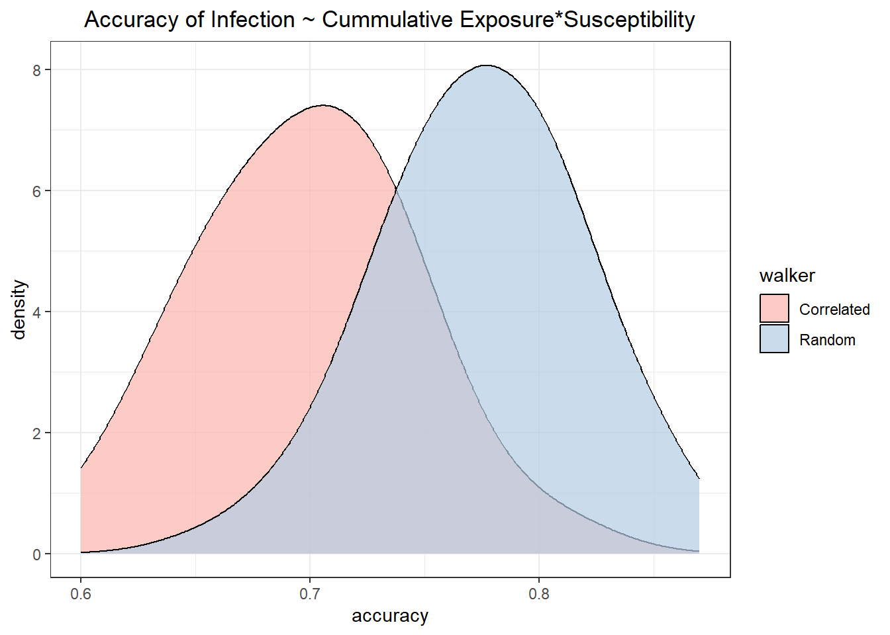
Code
## test if significantly differentlg_sim %>%filter(susceptibility =="Random") %>%t.test(accuracy ~ walker, data = ., var.equal =TRUE)
Two Sample t-test
data: accuracy by walker
t = -11.91, df = 198, p-value < 2.2e-16
alternative hypothesis: true difference in means between group Correlated and group Random is not equal to 0
95 percent confidence interval:
-0.088467 -0.063333
sample estimates:
mean in group Correlated mean in group Random
0.6983 0.7742
Conclusion
To wrap up the simulation showed that predicting individual infection probability as defined by their cumulative exposure risk, is influence by the amount of noise in that dataset such as we would expect to observe due to variability in individual’s susceptibility to infection. Future directions include rerunning this simulation over different susceptibility windows and using predictors that correlate with, but are not the ‘real’ risk landscape.
References
Albery, Gregory F., Amy R. Sweeny, Daniel J. Becker, and Shweta Bansal. 2022. “Fine-Scale Spatial Patterns of Wildlife Disease Are Common and Understudied.”Functional Ecology 36 (1): 214–25. https://doi.org/10.1111/1365-2435.13942.
Reynolds, Andy M. 2010. “Bridging the Gulf Between Correlated Random Walks and Lévy Walks: Autocorrelation as a Source of Lévy Walk Movement Patterns.”Journal of The Royal Society Interface 7 (53): 1753–58. https://doi.org/10.1098/rsif.2010.0292.
Sweeny, Amy R., and Gregory F. Albery. 2022. “Exposure and Susceptibility: The Twin Pillars of Infection.”Functional Ecology 36 (7): 1713–26. https://doi.org/10.1111/1365-2435.14065.
Titcomb, Georgia, John Naisikie Mantas, Jenna Hulke, Ivan Rodriguez, Douglas Branch, and Hillary Young. 2021. “Water Sources Aggregate Parasites with Increasing Effects in More Arid Conditions.”Nature Communications 12 (1). https://doi.org/10.1038/s41467-021-27352-y.
Turchin, Peter. 1998. “Quantitative Analysis of Movement: Measuring and Modeling Population Redistribution in Animals and Plants.”The Quarterly Review of Biology 74 (2): 240–41. https://doi.org/10.1086/393125.
Weinstein, Sara B., Julia C. Buck, and Hillary S. Young. 2018. “A Landscape of Disgust.”Science 359 (6381): 1213–14. https://doi.org/10.1126/science.aas8694.
Source Code
---title: "Simulation of Realized Infection Risk"description: "simulate a probability distribution of risk"author: - name: Kayla Kauffman url: https://https://kmkauffm.github.io/ orcid: 0000-0002-4897-9428format: html: toc: true toc-location: left message: false warning: false code-fold: true code-tools: true theme: sandstonebibliography: references.bibdate: 2023-12-15categories: [R, code, simulations] # self-defined categoriesimage: schema.pngdraft: false # setting this to `true` will prevent your post from appearing on your listing page until you're ready!---```{r}#| echo: false#| message: false# library(spDataLarge)library(tidyverse)library(sf)library(terra)library(SiMRiv)library(patchwork)theme_set(theme_bw())theme_update(plot.title =element_text(hjust =0.5),plot.subtitle =element_text(hjust =0.5))```# IntroductionMy research broadly addresses how land use change impact zoonotic disease sharing patterns between wildlife, domestic animals and people. One aspect of this research delves into how well a landscape of risk [@weinstein2018] can be predicted across space and time [@albery2022], and if people that spend more time in areas of high pathogen prevalence on the landscape are more likely to be infected with that parasite. The landscape of risk is the variation in pathogen density or pressure across the landscape, and the underlying environmental characteristics that permit pathogen persistence and onward transmission to susceptible individuals visiting that area (e.g., [@titcomb2021]).Prior to doing this with actual data I want to set up a simulation so I can figure out some of the methods using a simplified scenario. In particular I am interested in comparing how noise in the dataset due to the variability in individuals home range sizes and susceptibility to infection affect my ability to associate cumulative exposure risk to infection probability. For my purposes here susceptibility encompasses variability in behavior of individuals that influence pathogen exposure, immunological function, genetics, etc [@sweeny2022].# Risk MapI am using the elevation raster of Zion National Park included in the `spDataLarge` package as the landscape risk map. The thought behind using this and not simply a simulated raster is to have highly variable patterns and spatial autocorrelation. However to use this, I need the values to fall between 0 and 1. This is what the original maps looks like with the scaled values.```{r}## load the data from the spDataLarge packageriskmap <-rast(system.file("raster/srtm.tif", package ="spDataLarge"))## project in utm so easier units for making the simulated tracksriskmap <-project(riskmap, "EPSG:26912")## make values [0,1]riskmap <- riskmap/max(values(riskmap), na.rm=T)## most places should be pretty low## look at the 'original values'ggplot() + stars::geom_stars(data = stars::st_as_stars(riskmap)) +scale_fill_viridis_c() +coord_fixed() +labs(x=NULL, y=NULL, fill ="elevation scaled [0,1]", title ="Origional Elevation Map") +theme(axis.text =element_blank()) # since don't care about location```I want the values to be right skewed so that most places are low risk. So I transformed the values to values^3^ in my scaled raster to get the desired distribution of risk (pathogen density) in my risk map.```{r}## histogram of value distributionp1 <-values(riskmap) %>%as.data.frame() %>%filter(is.finite(srtm)) %>%ggplot() +geom_histogram(aes(x=srtm)) +labs(x ="cell values", y ="frequency", title ="Origional risk map values [0,1]")## add right skew to values so most are lowriskmap <- riskmap^3## plots to commpare old and new value distributionsp2 <-values(riskmap) %>%as.data.frame() %>%ggplot() +geom_histogram(aes(x=srtm)) +labs(x ="cell values", y ="frequency", title ="Skewed risk map values [0,1]")## plot old and new next to each otherp1+p2``````{r}#| include: falserm(p1, p2)```To make things run quickly, I aggregated the risk map so the resolution is lower. Then cropped the map to a squarer area so individuals don't fall outside of the area with values (the grey parts of the map above).```{r}## make resolution lower so things run quicklyriskmap <-aggregate(riskmap, fact=5, fun="mean")## make squaretmp <-vect(ext(riskmap)-1500, crs=crs(riskmap))riskmap <-crop(riskmap, tmp)## plot the new lower resolution mapggplot() + stars::geom_stars(data = stars::st_as_stars(riskmap)) +scale_fill_viridis_c(option ="H") +coord_fixed() +labs(x=NULL, y=NULL, fill ="risk level", title ="Risk Map") +theme(axis.text =element_blank()) # since don't care about location## check the data structure# riskmap``````{r}#| include: falserm(tmp)```# Single simulationI am using a single simulation to figure out how to set up the simulation and to outline the process involved in the simulation. Once that is ironed out, I'll put everything into a single function so I can repeat the simulation many times and get confidence intervals for my estimated effects.## Simulate movementTo simulate movement of individuals I followed the [`SiMRiv` vignette](https://cran.r-project.org/web/packages/SiMRiv/vignettes/SiMRiv.pdf). I wanted to have two types of movement to use in my simulation. I am calling these:- **Simple random walk** - Single-state uncorrelated movement in an homogeneous landscape using Brownian motion [@turchin1998] to make individuals 'vibrate' in place. Movement of only this type is the 'null' state because an individual essentially staying in one place will have an exposure risk equal to their singular location. This state will be used to demonstrate that an individual's probability of infection is proportional to their exposures.\- **Complex correlated walk** - Multistate correlated movement in a heterogeneous landscape using Levy walk-like movement with two-state movements composed of small random walks and bursts of longer correlated random walks [@reynolds2010]. A heterogeneous landscape is used to makes some areas high resistance, thus the population's movements will look more similar, since most movement will follow low resistance 'paths' (roads), but individuals will still randomly branch off into higher resistance areas.An important part of simulating movement is the step length, which need to be relevant to the animal and the resolution of the raster. To limit movement in the simple random walk, make step sizes 1/20th of the resolution of the risk map. Find the resolution of the risk map. The resolution show help with choosing a step length that is relative to the pixel sizes so that individuals can move, but not too much within a given step. Steps of \~1/10 a pixel seem reasonable.```{r}## save cell sizecell_size =res(riskmap)[1]## number of stepsnsteps =1000## random walk with step lengths relative to rast resolutionrand.walk <-state(concentration =0, #turning angle concentration; 0=randompwind =perceptualRange("gaussian", # centered on indiv's position cell_size/5), ## radius of perceptual range 1/4 of steplengthsteplen = cell_size/20, #maximum step lengthname ="tight_random") #name of the state## correlated walk with step lengths relative to rast resolutionscorr.walk <-state(concentration =0.9, #turning angle concentration; 1=straight linepwind =perceptualRange("circular", # gives equal weight to all pixels centered on current position cell_size*2), ## radius of perceptual range 1/4 of steplengthsteplen = cell_size/5, #maximum step lengthname ="correlated") #name of the state## using those states make walkersrand.walker <-species(states = rand.walk)## set up levy walker walklevy.walker <-species(states =c(rand.walk, corr.walk),trans =transitionMatrix(0.05, 0.01)) #probabilities of changing state 1 -> 2 and 2 -> 1```### Simple random walkI simulated the simple random walks for 100 individuals all starting at randomly selected areas with in an area of interest (aoi). Because individuals can run off the edge of the raster, the starting locations should not be near the edge. The area of interest is the white rectangle, with each point representing an individual's starting location.```{r}#| message: false#| warning: false## generate random starting points ### avoid edges by defining area of interest more inside the risk map### find bounding box of risk mapaoi <-st_bbox(riskmap)### make insto sfc (spatial) objectaoi <-st_as_sfc(aoi)### buffer to be 5 cells from edge of riskmapaoi <-st_buffer(aoi, -cell_size*5)# aoi <- crop(riskmap, aoi)# ggplot() +# stars::geom_stars(data = stars::st_as_stars(riskmap)) +# scale_fill_viridis_c(option = "H") +# coord_fixed() +# labs(x=NULL, y=NULL, fill = "risk level", title = "Area of interest for starting locations on Risk Map") +# theme(axis.text = element_blank()) +# since don't care about location# geom_sf(data = aoi, fill = "white", alpha = 0.3, color = "white", lwd = 1)start_coord <-st_sample(aoi, 100, type ="random")## plot itggplot() + stars::geom_stars(data = stars::st_as_stars(riskmap)) +scale_fill_viridis_c(option ="H") +coord_fixed() +labs(x=NULL, y=NULL, fill ="risk level", title ="Random walk starting locations") +theme(axis.text =element_blank()) +# since don't care about locationgeom_sf(data = aoi, fill ="white", alpha =0.3, color ="white", lwd =1) +geom_sf(data = start_coord)```The random walks for all the individuals look like my intended "vibrating in place" outcome, such that individuals will spend all their time in just a few pixels, so theoretically their exposure risk is less variable.```{r}#| message: false#| warning: false## need the locations as a nx2 matrix# start_coord_mat <- as.matrix(as.data.frame(start_coord, geom="xy"))start_coord_mat <-st_coordinates(start_coord)## simulate single state walks of 1000 stepssim.rw <-list()for (i in1:100) {## simulate from location i tmp <-simulate(rand.walker, nsteps,coords = start_coord_mat[i,])## save results to a list sim.rw[[i]] <-cbind(tmp[,1], tmp[,2])}## make in to sfc linessim.rw.sfc <-lapply(sim.rw, st_linestring)sim.rw.sfc <-st_sf(id =1:100, geometry = sim.rw.sfc) %>%st_set_crs(st_crs(riskmap))## plot itggplot() + stars::geom_stars(data = stars::st_as_stars(riskmap)) +scale_fill_viridis_c(option ="H") +coord_fixed() +labs(x=NULL, y=NULL, fill ="risk level", title ="Random walks") +theme(axis.text =element_blank()) +# since don't care about locationgeom_sf(data = sim.rw.sfc)``````{r}#| include: false## clean uprm(start_coord, sim.rw)```### Correlated walksA resistance raster is needed to get correlated (levy walker) walks that are similar between individuals.```{r}#| message: false## basemaps for resistance --NOT using because individual end up in a hairball# landcover <- resistanceFromShape(# system.file("doc/landcover.shp", package="SiMRiv")# , res = 50, field = "coverclass", mapvalues = c(# "forest" = 0.5, "urban" = 1, "dam" = 0# , "shrubland" = 0.75), background = 0.95)# ## river shape is the main resistance, because walks will follow pathsriver.shape <- sf::st_read(system.file("doc/river-sample.shp", package="SiMRiv"), quiet = T)## resistence surfaceresistance <-resistanceFromShape(river.shape, #system.file("doc/river-sample.shp", package="SiMRiv"),# baseRaster = landcover, ## not usingres =50, #provide when don't provide basemapbuffer =300, field =0.01,background =0.75, margin =3000)## add central area with low resistence so individuals start in roughly the same placeriver.cent <-st_buffer(st_centroid(st_union(river.shape)), 200)resistance <-resistanceFromShape(river.cent, baseRaster = resistance, buffer =1000, field =0, background =1, margin =3000)# buffer here is just some magical function to convert river# order into a meaningful value in the [0, 1] range!# plot(resistance, axes = F, main="resistence raster")# resistance``````{r}#| include: falserm(river.shape, river.cent)```Then the resistance raster should be down sampled and moved to the same location as the risk map.```{r}## move the resistence 'rivers' to the same location as the risk mapresistance <-rast(nrows =dim(resistance)[1],ncols =dim(resistance)[2],nlyrs =1, names ="resistance", extent =st_bbox(aoi),vals =values(resistance),crs =crs(riskmap))## resample to resolution matches riskmapresistance <-resample(resistance, riskmap, method ="rms")## make NAs to 1resistance[is.na(resistance)] =1## plot itggplot() + stars::geom_stars(data = stars::st_as_stars(resistance)) +scale_fill_steps(breaks =c(0, 0.001, 0.4, 0.6, 0.75, 1),low="white", high ="black") +# scale_fill_viridis_c(option = "H") +coord_fixed() +labs(x=NULL, y=NULL, fill ="resistance", title ="Resistance layer") +theme(axis.text =element_blank()) # since don't care about location```At first I tried using the same random starting locations as above to generate my correlated walks for each individual.```{r}#| message: false#| warning: false## simulate single state walks of 1000 stepssim.rw <-list()for (i in1:100) {## simulate from location i tmp <-simulate(levy.walker, nsteps,resist =raster(resistance),coords = start_coord_mat[i,])## save results to a list sim.rw[[i]] <-cbind(tmp[,1], tmp[,2])}## make in to sfc linessim.rw.bad <-lapply(sim.rw, st_linestring)sim.rw.bad <-st_sf(id =1:100, geometry = sim.rw.bad) %>%st_set_crs(st_crs(riskmap))## plot itggplot() + stars::geom_stars(data = stars::st_as_stars(resistance)) +scale_fill_steps(breaks =c(0, 0.001, 0.4, 0.6, 0.75, 1),low="white", high ="black") +# scale_fill_viridis_c(option = "H") +coord_fixed() +labs(x=NULL, y=NULL, fill ="resistance", title ="Levy-walker walks - random start locations") +theme(axis.text =element_blank()) +# since don't care about locationgeom_sf(data = sim.rw.bad, col="red", alpha=0.5)``````{r}#| include: falserm(sim.rw, tmp, sim.rw.bad, start_coord_mat)```However, to make this more realistic, my correlated walks should also act like individuals following paths then delving off into different areas such as people accessing their crop fields. So instead of using random starting locations, I made the starting locations only be in low resistance areas.```{r}#| message: false#| warning: false## new starting coords in areas of low resistance so don't get stuckinit =xyFromCell(resistance, sample(which(values(resistance) ==0), 100, replace=T))## simulatesim.rw <-list()for (i in1:100) {## simulate from location i tmp <-simulate(levy.walker, nsteps,resist =raster(resistance),coords = init[i,])## save results to a list sim.rw[[i]] <-cbind(tmp[,1], tmp[,2])}## make in to sfc linessim.rw.levy <-lapply(sim.rw, st_linestring)sim.rw.levy <-st_sf(id =1:100, geometry = sim.rw.levy) %>%st_set_crs(st_crs(riskmap))## plot itggplot() + stars::geom_stars(data = stars::st_as_stars(resistance)) +scale_fill_steps(breaks =c(0, 0.001, 0.4, 0.6, 0.75, 1),low="white", high ="black") +# scale_fill_viridis_c(option = "H") +coord_fixed() +labs(x=NULL, y=NULL, fill ="resistance", title ="Levy-walker walks") +theme(axis.text =element_blank()) +# since don't care about locationgeom_sf(data = sim.rw.levy, col="red", alpha=0.25)``````{r}#| include: falserm(sim.rw, tmp, init)```## Exposure riskFor each individual I calculate their utilization distribution based purely on the proportion of points in each cell (density). For real movement data using more accurate estimates of utilization distributions such as kernel density, Brownian bridge movement models, etc. However, those methods are slow.To figure out how to do this, I first tried it out with just one individual.```{r}## which individual (1-100)who =1## kernel density estimatekde.trial <- terra::rasterize(st_cast(sim.rw.levy[who,], "MULTIPOINT"), riskmap, fun ="length", background =0)/nstepsif(sum(values(kde.trial), na.rm=T) !=1){stop("the sum of the density should be equal to 1")}``````{r, include=F, eval=FALSE}### this is resulting in kde map that doesn't align with the track## need a list of the coordinates for one individualkde.trial <- sim.rw.levy[1,] %>%st_coordinates() %>% as.data.frame### use mass kde functionkde.trial <- MASS::kde2d(x = kde.trial$X, y = kde.trial$Y)#,# n=c(ncol(riskmap),# nrow(riskmap)))#, lims = ext(riskmap)[1:4])## make back into rastkde.trial <-rast(kde.trial$z,crs =crs(riskmap),extent =ext(riskmap))## plotggplot() + stars::geom_stars(data = stars::st_as_stars(kde.trial)) +scale_fill_viridis_c(option ="D") +coord_fixed() +labs(x=NULL, y=NULL, fill ="kde", title ="Density estimate for one individual") +theme(axis.text =element_blank()) +# since don't care about locationgeom_sf(data = sim.rw.levy[1,])```To see what that looks like, for the single individual I cropped to just the immediate area that individual used the plot their density estimate.```{r}## crop to area where the individual was so not tinykde.sm <- terra::crop(kde.trial, st_buffer(sim.rw.levy[who,], 2000))## similarly crop riskmap to same arearisk.sm <-crop(riskmap, st_buffer(sim.rw.levy[who,], 2000))## plot traj and kdeggplot()+ stars::geom_stars(data = stars::st_as_stars(kde.sm)) +scale_fill_viridis_c(option="A", direction =-1) +coord_fixed() +labs(x=NULL, y=NULL, fill ="kde", title ="Density raster of one individual") +theme(axis.text =element_blank()) +# since don't care about locationgeom_sf(data = sim.rw.levy[who,])```Now I want to calculate the exposure risk for each individual $k$ in each pixel ($i$) as a function of the time they spend in that pixel and the risk of exposure in that pixel.$$Exposure_{ki} = kde_i*risk_i$$```{r}## calculate risk kde.risk <- kde.sm*risk.sm## plots to demop1 <-ggplot()+ tidyterra::geom_spatraster(data=risk.sm) +scale_fill_viridis_c(option="A", direction =-1) +labs(title ="Landscape risk", fill ="risk") +theme(legend.position ="bottom", axis.text =element_blank(),legend.direction ="horizontal")p2 <-ggplot()+ tidyterra::geom_spatraster(data=kde.sm) +scale_fill_viridis_c(option="A", direction =-1) +labs(title ="KDE of Individual use", fill ="use") +theme(legend.position ="bottom", axis.text =element_blank(),legend.direction ="horizontal")p3 <-ggplot()+ tidyterra::geom_spatraster(data=kde.risk) +scale_fill_viridis_c(option="A", direction =-1) +labs(title ="Infection probability", fill ="probability") +theme(legend.position ="bottom", axis.text =element_blank(),legend.direction ="horizontal")p1 + p2 + p3``````{r}#| include: false#### clean up examplesrm(kde.sm, risk.sm, kde.risk, p1, p2, p3, who)```Therefore for each individual $k$ their cumulative 'exposure risk' the sum of all their exposures in pixels, where $i$ is $1:n_{pixels}$: $$Exposure_k = \sum{kde_i*risk_i}$$To calculate the cummulative exposure risk for all individuals, I used a function.```{r}#| code-fold: show## make a functionmeasure_risk <-function(walker, riskmap, nsteps){## convert from lines to points pts <-st_cast(walker, "MULTIPOINT")## dataframe with any attributes (just IDs) df <- pts %>%st_drop_geometry() %>%as.data.frame() pts <-vect(pts)## for each individual rasterize their points so have sum of points in each pixel## this is not working using the stars::st_rasterize, or the terra::rasterize -- both return one object of all individuals, not an obj per indiv## also tried using apply, lapp, and app with those terra::rasterize kde <-c()for(i in1:nrow(pts)){ kde[[i]] <- terra::rasterize(pts[i,], riskmap, fun ="length", background =0)/nsteps }## multiply time in cell (kde) * cell's risk kde.risk <-lapply(kde, function(i) i*riskmap)## sum of values in each layer are individual's risk indiv.risk <-lapply(kde.risk, function(i) sum(values(i), na.rm=T)) df$exp_risk <-unlist(indiv.risk)return(df)}```I found the cummulative expsoure risk for each individual using the function.```{r}#| echo: false#| message: false## calculate individual risk for the brownian (1) and correlated (2)indiv.risk.rw <-measure_risk(walker = sim.rw.sfc, riskmap = riskmap, nsteps = nsteps)indiv.risk.levy <-measure_risk(walker = sim.rw.levy, riskmap = riskmap, nsteps = nsteps)```The distribution of values in the random walkers is the range of the map, which is expected.```{r}## look at some of the values# indiv.risk.rw %>% head() %>% knitr::kable(title = "Cummulative exposure risk (`exp_risk`) by individual (`id`)")indiv.risk.rw %>%ggplot()+geom_histogram(aes(x = exp_risk)) +labs(x ="risk", title ="Distribution of individual's cumulative exposure risk - Random walks")```The distribution of values in the correlated walkers is less then the range of the map, which is also expected.```{r}# indiv.risk.levy %>% head()indiv.risk.levy %>%ggplot()+geom_histogram(aes(x = exp_risk)) +labs(x ="risk", title ="Distribution of individual's cumulative exposure risk - Levy-walker walks")```## Assisgn susceptibilityIndividuals should have variable susceptibility so that not everyone's probability of infection equals their risk sum. This is adding noise to the data. I want to compare the randomly assign susceptibility to a fixed susceptibility for each simulation. The fixed susceptibility is just the average susceptibility of all individuals in that round of the simulation. For this simulation I am assigning susceptibility randomly using a uniform distribution between 0.7 and 0.9. and the fixed susceptibility with the average of the random susceptibility values.```{r}#| code-fold: show## susceptibility is variable between individualssusceptibility =runif(100, 0.7, 0.9)mean_suscept =mean(susceptibility)```The probability of infection is a product of the individuals exposure risk and susceptibility.```{r}#| tbl-cap: Infections in Random Walkers#| tbl-subcap: ["exposure*susceptibility", "exposure*avg susceptbility"]#| layout-ncol: 2## make a dataframe for the outcomes --- random walkersrw_risk <-cbind(indiv.risk.rw,data.frame( susceptibility = susceptibility)) %>%rowwise() %>%## predict infections based on exposure riskmutate(infected_es =rbinom(1, 1, exp_risk * susceptibility ), # sum(exp_risk * susceptibility)infected_e =rbinom(1, 1, exp_risk * mean_suscept)) # sum(exposure risk) alone## see how many people infected = 1rw_risk %>%count(infected_es) %>% knitr::kable()rw_risk %>%count(infected_e) %>% knitr::kable()``````{r}#| tbl-cap: Infections in Correlated Walkers#| tbl-subcap: ["exposure*susceptibility", "exposure*avg susceptbility"]#| layout-ncol: 2#| ## make a dataframe for the outcomes --- levy walkerslevy_risk <-cbind(indiv.risk.levy,data.frame( susceptibility = susceptibility)) %>%rowwise() %>%## predict infections based on exposure riskmutate(infected_es =rbinom(1, 1, exp_risk * susceptibility ), # sum(exp_risk * susceptibility)infected_e =rbinom(1, 1, exp_risk * mean_suscept)) # sum(exposure risk) alone## see how many people infected = 1levy_risk %>%count(infected_es) %>% knitr::kable()levy_risk %>%count(infected_e) %>% knitr::kable()```## ResultsIf the map worked, then exposure risk should predict infection in the random walkers.```{r}p1 <-ggplot(rw_risk, aes(x=exp_risk, y = infected_es))+geom_point(aes(col=factor(infected_es))) +geom_smooth(method="lm") +scale_y_continuous(breaks =c(0, 1)) +labs(x ="exposure risk", y ="infected", col ="infected", subtitle ="exposure * susceptbility")p2 <-ggplot(rw_risk, aes(x=exp_risk, y = infected_e))+geom_point(aes(col=factor(infected_e))) +geom_smooth(method="lm") +scale_y_continuous(breaks =c(0, 1)) +labs(x ="exposure risk", y ="infected", col ="infected", subtitle ="exposure * avg susceptbility")p1 + p2 +plot_layout(guides ="collect") +plot_annotation(title ="Random walker infections")```Not great, but the infected individuals do have higher exposure risks. Let's see how it worked for the Levy-walker correlated walkers that covered much more ground.```{r}p1 <-ggplot(levy_risk, aes(x=exp_risk, y = infected_es))+geom_point(aes(col=factor(infected_es))) +geom_smooth(method="lm") +scale_y_continuous(breaks =c(0, 1)) +labs(x ="exposure risk", y ="infected", col ="infected", subtitle ="exposure * susceptbility")p2 <-ggplot(levy_risk, aes(x=exp_risk, y = infected_e))+geom_point(aes(col=factor(infected_e))) +geom_smooth(method="lm") +scale_y_continuous(breaks =c(0, 1)) +labs(x ="exposure risk", y ="infected", col ="infected", subtitle ="exposure * avg susceptbility")p1 + p2 +plot_layout(guides ="collect") +plot_annotation(title ="Correlated walker infections")```Compare predictive accuracy between the models```{r}pred_acc_fun <-function(x, infected_type){ x$infected <- x %>% dplyr::select(any_of(infected_type)) %>%pull()## binomial model mod <-glm(infected ~ exp_risk, data = x, family ="binomial")## predicted prob of infection x$pred_prob <-predict(mod, x, type ="response")## if predicted prob >50 say infected x$pred <-1*(x$pred_prob > .5) x$accurate <-1*x$infected == x$predsum(x$accurate) /nrow(x)}```The accuracy of the infection predictions should be highest in the random walk individuals with fixed susceptibility (exp_risk \* avg susceptibility), followed by those with random susceptibility, then correlated walkers with fixed, then random susceptibility.```{r}data.frame(walker =c("Random", "Random", "Correlated", "Correlated"),susceptibility =c("Fixed", "Random", "Fixed", "Random"),accuracy =c(pred_acc_fun(rw_risk, "infected_e"),pred_acc_fun(rw_risk, "infected_es"),pred_acc_fun(levy_risk, "infected_e"),pred_acc_fun(levy_risk, "infected_es") )) %>% knitr::kable(title ="Predictive accuracy of infection probabilities")``````{r}#| include: false## clean uprm(levy_risk, indiv.risk.levy, indiv.risk.rw, p1, p2, rw_risk, sim.rw.levy, sim.rw.sfc)```# Large SimulationUltimately to see how cumulative exposure risk predicts infection in people, the simulation needs to be run many times. To do that everything from the single simulation needs to be in a single function.```{r}simulation_fun <-function(n_steps =1000, n_individuals =100, susceptibility_range =c(0.7, 0.9),risk_landscape = riskmap, study_area = aoi, landscape_resistance = resistance, random_walker = rand.walker, correlated_walker = levy.walker){## simulate movement### Random (brownian) walks## random starting coordinates start_coord <-st_sample(study_area, 100, type ="random") start_coord <-st_coordinates(start_coord)## simulate single state walks of 1000 steps sim.rw <-list()for (i in1:n_individuals) {## simulate from location i tmp <-simulate(random_walker, n_steps,coords = start_coord[i,])## save results to a list sim.rw[[i]] <-cbind(tmp[,1], tmp[,2]) }## make in to sfc lines walks.random <-lapply(sim.rw, st_linestring) walks.random <-st_sf(id =1:n_individuals, geometry = walks.random) %>%st_set_crs(st_crs(risk_landscape))### Levy-walker (correlated random)## new starting coords in areas of low resistance so don't get stuck init =xyFromCell(resistance, sample(which(values(resistance) ==0), 100, replace=T))## simulate sim.rw <-list()for (i in1:n_individuals) {## simulate from location i tmp <-simulate(correlated_walker, n_steps,resist =raster(resistance),coords = init[i,])## save results to a list sim.rw[[i]] <-cbind(tmp[,1], tmp[,2]) }## make in to sfc lines walks.corr <-lapply(sim.rw, st_linestring) walks.corr <-st_sf(id =1:100, geometry = walks.corr) %>%st_set_crs(st_crs(risk_landscape))## Calculate cumulative exposure risk/individual### random walkers indiv.risk.random <-measure_risk(walker = walks.random, riskmap = risk_landscape, nsteps = n_steps)### correlated random walkers indiv.risk.corr <-measure_risk(walker = walks.corr, riskmap = risk_landscape, nsteps = n_steps)## assign susceptibility susceptibility =runif(100, susceptibility_range[1], susceptibility_range[2]) mean_suscept =mean(susceptibility)## determine infections## make a dataframe for the outcomes --- random walkers indiv.risk.random <-cbind(indiv.risk.random,data.frame( susceptibility = susceptibility)) %>%rowwise() %>%## predict infections based on exposure riskmutate(infected_es =rbinom(1, 1, exp_risk * susceptibility ), # sum(exp_risk * susceptibility)infected_e =rbinom(1, 1, exp_risk * mean_suscept)) # sum(exposure risk) alone## make a dataframe for the outcomes --- levy walkers indiv.risk.corr <-cbind(indiv.risk.corr,data.frame( susceptibility = susceptibility)) %>%rowwise() %>%## predict infections based on exposure riskmutate(infected_es =rbinom(1, 1, exp_risk * susceptibility ), # sum(exp_risk * susceptibility)infected_e =rbinom(1, 1, exp_risk * mean_suscept)) # sum(exposure risk) alone## output predictive accuracydata.frame(walker =c("Random", "Random", "Correlated", "Correlated"),susceptibility =c("Fixed", "Random", "Fixed", "Random"),accuracy =c(pred_acc_fun(indiv.risk.random, "infected_e"),pred_acc_fun(indiv.risk.random, "infected_es"),pred_acc_fun(indiv.risk.corr, "infected_e"),pred_acc_fun(indiv.risk.corr, "infected_es") ))}```Check that the function works when run one time. By default the simulation uses the riskmap, aoi, resistance raster, and random and levy walker walks set up previously. The default number of steps in each walk is 1000, for 100 individuals, with susceptibility \[0.7, 0.9\] as used previously.```{r}## check it works running one timesimulation_fun() %>% knitr::kable(title ="Results of one simulation using the function")```Then run the function 100 times.```{r}## fun the function many timeslg_sim <-replicate(100, simulation_fun(), simplify = F)## make the output into one large dataframelg_sim <-bind_rows(lg_sim)```The distributions of the accuracy of models that use cumulative exposure to predict infection show that as expected random walkers infections are predicted with higher accuracy, and that the effect of variable susceptibility to infection in each individual lower the accuracy of correlated walks more than random walks.```{r}## plot the distribution of predictive values between the fix susceptibility random and correlated walkslg_sim %>%ggplot(aes(x=accuracy, fill=walker)) +geom_density(adjust =1.5, alpha =0.7) +scale_fill_brewer(palette ="Pastel1")+facet_wrap(~susceptibility, ncol=1)+labs(title ="Accuracy of Infection Estimates",subtitle ="Fixed vs random susceptibility",fill ="Walk type")```The predictive accuracy of the simulations that used the fixed susceptibility values for all individuals (infection is only related to cumulative exposure risk) is significantly higher in random walkers then correlated walkers.```{r}## plot the distribution of predictive values between the fix susceptibility random and correlated walkslg_sim %>%filter(susceptibility =="Fixed") %>%ggplot(aes(x=accuracy, fill=walker)) +geom_density(adjust =1.5, alpha =0.7) +scale_fill_brewer(palette ="Pastel1")+labs(title ="Accuracy of Infection ~ Cummulative Exposure")## test if significantly differentlg_sim %>%filter(susceptibility =="Fixed") %>%t.test(accuracy ~ walker, data = ., var.equal =TRUE)```The same effect is seen in the randomly assigned individual susceptibility random and correlated walkers.```{r}## plot the distributions of predictive values between the variable susceptibility random and correlated walkslg_sim %>%filter(susceptibility =="Random") %>%ggplot(aes(x=accuracy, fill=walker)) +geom_density(adjust =1.5, alpha =0.7) +scale_fill_brewer(palette ="Pastel1")+labs(title ="Accuracy of Infection ~ Cummulative Exposure*Susceptibility")## test if significantly differentlg_sim %>%filter(susceptibility =="Random") %>%t.test(accuracy ~ walker, data = ., var.equal =TRUE)```# ConclusionTo wrap up the simulation showed that predicting individual infection probability as defined by their cumulative exposure risk, is influence by the amount of noise in that dataset such as we would expect to observe due to variability in individual's susceptibility to infection. Future directions include rerunning this simulation over different susceptibility windows and using predictors that correlate with, but are not the 'real' risk landscape.# References
![]()